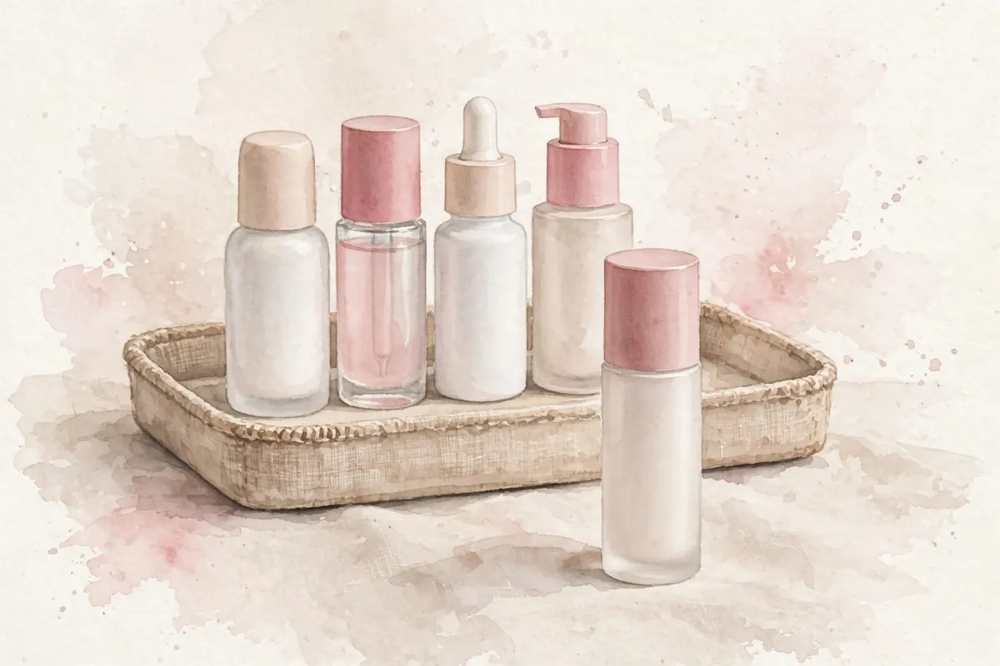

トップ ＞ スキンケア ＞ 新しいアイテムを1つ足すときの試し方
新しいアイテムを1つ足すときの試し方

新しいアイテムを試したくなる気持ちは、買い物の楽しみでもあります。ただ、複数を一度に替えると、変化があったときに何が合って何が合わなかったのかが分からなくなります。この記事では、新しいアイテムを「1つだけ」足すときの、試し方の段取りを整理します。
足すのは一度に1つ、が基本
理由は単純で、変化の原因を特定できるからです。1つだけ足して数日使えば、そのアイテムとの相性が見えてきます。複数を同時に始めると、肌の調子が変わったときに、どれを止めればいいのか判断できません。施術の現場でも、新しい手技や道具は1つずつ試して、様子を見てから次に進みます。
足す場所も大切です。今の手順の、どの位置に入れるのかを先に決めておきます。化粧水の前なのか、後なのか。商品の表示に使い方の順番が書かれている場合は、それに従うのが基本です。順番を決めずに始めると、日によって置き場所がぶれて、試す条件がそろいません。
試す期間と、観察するポイント
試す期間は、最低でも数日から1週間ほどを目安に置くのがおすすめです。初日だけで判断せず、朝の手触り、夕方の状態、塗るときの感触などを、同じ条件で眺めます。メモを付ける必要はありませんが、「いつから使い始めたか」だけは覚えておくか、開封日と一緒に書き留めておくと振り返りやすくなります。
観察のポイントは、劇的な変化を探すことではありません。「いつもと違う感じがしないか」という穏やかな確認で十分です。赤みやかゆみなど、いつもと違う反応が出たときは、無理に続けないことが大切です。
合わなかったときの戻し方
合わないと感じたら、そのアイテムだけを外して、元の手順に戻します。1つだけ足す方法の良さは、この「戻す」が簡単にできることです。元の手順が安定しているからこそ、新しいものの試行が気軽にできます。外したアイテムは、家族と相談して使う、ボディ用に回すなど、行き先を考えてもいいでしょう。
新しいアイテムを使って赤み・かゆみ・ひりつきなどの異常を感じた場合は、すぐに使用を中止してください。症状が続くときや不安があるときは、皮膚科などの専門家に相談してください。
試す順番は「土台に近いもの」から
足したいアイテムが複数ある場合は、試す順番も決めておくと計画が立てやすくなります。おすすめは、化粧水のように手順の土台に近いものから順に試すことです。土台が安定すると、その上に重ねるものの様子も読みやすくなります。逆に、仕上げに近いものから替えると、土台との組み合わせの変化が見えにくくなります。
1つ試して、様子が安定してから次へ。この間隔を、自分の生活の中では「2週間に1つ」などと決めておくと、買い物の計画も立てやすくなります。試すことは、増やすことと同義ではありません。試した結果、入れない判断も、立派な結論です。
足すアイテムを買う前に、パッケージや公式の案内で使い方を確認しておくと、試し始めてからの迷いが減ります。使う順番、1回の量、朝夜のどちら向きか。これらが分かっていれば、初日から条件をそろえて試せます。店頭で迷う時間も、事前の確認で短くなります。
サンプルやミニサイズがある場合は、まずそちらで試す方法もあります。小さいサイズは「試すための設計」です。本品を買うかどうかは、試した結果で決める。この順序を守るだけで、合わない本品を抱えることが減ります。試し方の上手さは、買い物の上手さでもあります。
試している期間は、ほかの条件をなるべく変えないことも大切です。洗顔の方法や、ほかのアイテムの量を同時に変えると、観察の条件がそろいません。試すとは、条件を固定して1つだけ動かすことです。この原則は、施術の現場で新しい商材を評価するときとまったく同じです。
観察の結果は、合う・合わないの二択だけではありません。「朝だけ合う」「季節が変われば合うかもしれない」といった、中間の結論もあります。結論を急がず、条件付きで残しておく柔軟さも、試し方の技術です。
新しいものを試す楽しみは、ケアの楽しみの中心です。その楽しみを長く続けるためにも、1つずつ、という型を守ってください。型があるからこそ、試すことが気軽になります。
セラフィナ「足すのは一度にひとつ。それが結局いちばんの近道なんだね」